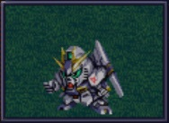

机动战士高达逆袭的夏亚登场机体#
括号内为PS版变动。地形补正(→)为用默认驾驶员的地形适应和机体的移动类型修正之后的数据。
我方机体#
ジェガン#
机体在初期机动战士中能力不错，第四次里走真实系路线会拿到两台，但是两台都保不住。一台被拿来换ヤクトドーガ，另一台被ロザミア开走，所以还是不要改造了。
第四次S里走真实系路线钢坦克不会被废弃，所以还是能剩下来一台的。
リ・ガズィ（BWS）#
要收集全机器人大图鉴的话，需要至少出战并且分离一次。作为机动战士系少见的飞机来说，可以用来探宝，但是因为打爆两次才需要付修理费（在深海上是个例外，掉海里会爆掉），而且武器攻击力也相对不错，也可以用来作战（当然对有光线护盾的敌人不要上它）。机动战士系机师的对空适应是个问题，加缪加入之后可以让阿姆罗去开Z高达，加缪开这台。自爆、被击落或者分离之后成为リ・ガズィ（MS），具有更多的武器和更高的运动性。
ラー・カイラム#
超大型粒子炮需要90EN，改满也无法放3次，不过ブライト的等级只要放一次就可以刷得很高，所以伤害力并不是问题。问题是生存率，一旦进入敌人的射程范围就会成为目标，所以要改机体的防御和运动属性。
武器方面地图武器优先，因为弹药充足，可以用来消耗敌人，改装两三级就可以了。
νガンダム#

HP 2800
EN 180
装甲 270
运动性 50
限界 255
类型 陆
移动力 9
大小 M
空🚫→D
陆B(A)
海C（B）→C（B）
宇A
シールド
Ｉフィ－ルド
バルカン(P)
攻击 420
射程 1
命中 +35
暴击 -10
空A陆A海A宇A
弹数 5
ミサイルランチャー
攻击 880
射程 1~5
命中 +5
暴击 +0
空A陆A海A宇A
弹数 5
ビームサーベル(P)🤛
攻击 1050
射程 1
命中 +20
暴击 +20
空🚫陆A→B(A)海A→C(B)宇A
ビームキャノン(B)
攻击 1200
射程 1~6
命中 +5
暴击 +0
空A陆A海🚫宇A
弹数 3
ビームライフル(B)
攻击 1220
射程 1~7
命中 +0
暴击 +10
空A陆A海🚫宇A
弹数 8
ハイパーバズーカ
攻击 1300(1450)
射程 2~6
命中 -5(-15)
暴击 +0
空A陆A海A宇A
弹数 2
フィンファンネル
攻击 2000(2500)
射程 1~9
命中 +30
暴击 +30
空A陆A海B宇A
弹数 6
必要技能 ニュータイプ
必要气力 100
游戏中期入手。虽然射程为9，但是游戏后半段敌人小兵的射程也达到了9，所以需要高性能雷达才可以从射程外攻击大多数敌人。加装两个的话，就只有最终BOSS射程能与之相比了。
装甲太薄了，I立场作用不大。攻击力并不是机动战士系顶尖，好在射程长而且气力要求低，可以打消耗————虽然只有6发，但是比F91比起来还是强得多。
第四次S中不光加强了武器的攻击力，更重要地是加强了地形适应，陆地适应现在是A，实用性大大提升。